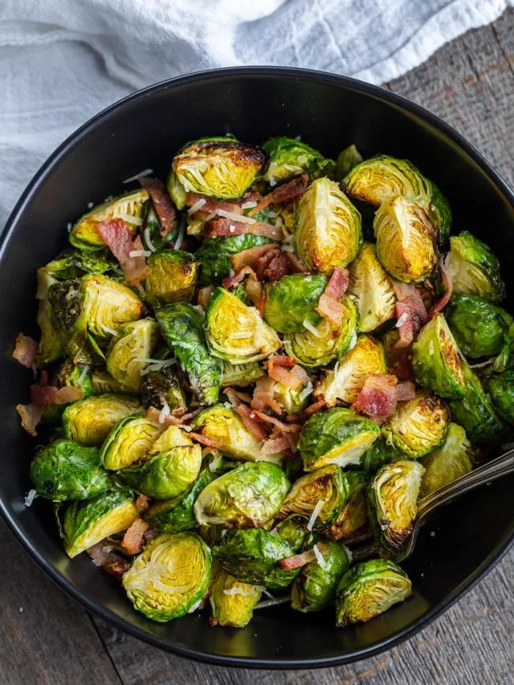

Home page
Bacon Brussels Sprouts Salad

This bacon Brussels sprouts salad recipe features sauteéd sprouts, crispy bacon bits, and sharp Parmesan cheese. It’s a warm salad that’s absolutely binge-worthy!
Ingredients
- Brussels sprouts
- bacon slices
- shredded Parmesan cheese
Steps
- Wash the Brussels sprouts, then cut or shred them to your preferred shape and size. Chop the bacon into thin strips and measure out the cheese and salt.
- Add the bacon slices to the skillet and brown them until they are crispy.
- Add the raw brussels sprouts and season them with garlic parsley salt.
- Cook the salad on medium high heat for about five minutes. Then, stir in the shredded Parmesan cheese and remove from the heat.
- Serve the salad immediately in a large bowl while it is still warm.